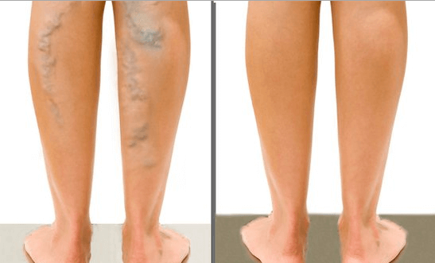

Dr. Thomas, Dr. med. Vascular surgeon (more than 30 years of professional experience)
In my practice there have been a few cases in which patients have gone under the knife. This usually happens in the third and fourth stages of varicose veins. However, the invention of the cream for varicose veins Varico Revita radically changed this situation.
This great product helps both in the initial stages of the development of this problem and in severe cases, the prospect of cure "without a scalpel" looks hopeless. I only operate in particularly severe cases and recommend that everyone else use this cream.
Varico Revita is undoubtedly the best product to treat and prevent varicose veins at home.
Can you see it
Here is the condition before starting treatment a week ago:

Comments
Ina
I have never believed in products like this. I've tried a lot of things. However, this cream not only helps against swelling, but also against varicose veins. In general, I can recommend ordering this product. This is especially true for those who have had facial surgery. Don't be stupid and don't go under the knife. You should try Varico Revita first.
Nylon500
When I was pregnant I developed varicose veins. I used this cream. As time went on I really started to feel better. I recommended her to my mother and after a week she had legs like she was 30...she's 60 years old!!! I ordered from this site because I don't like taking risks. I only trust the official providers.
Julia
I read this article and immediately placed an order. I am waiting very impatiently for the results.
Ivana123
All my friends are talking about Varico Revita. Even my mother told me that someone got rid of the swelling within 8 days! I should definitely try them! I will order :)
Vera
I had problems with varicose veins for a long time. Now I use this cream, which hasn't completely healed my legs, but it quickly relieves the pain. I'm not panicking yet and after 2 days of use it's still too early to talk about results anyway. I'm curious to see what the situation will be at the end of the treatment. My legs feel lighter and I fly like a butterfly.
Sandra
Hello! I recently ordered Varico Revita from this website and have already started using it. It helps! Indescribably pleasant!
Then.696
I have large varicose veins on my legs. They hurt all the time. But this cream relieves me of my pain immediately. Even the swelling has reduced. Now I recommend them to all my friends.
Antonia
I have tried many things to combat my varicose veins, including homeopathic products. Unfortunately, I only achieved minimal results with this. Sometimes my varicose veins reduced a little, but they always came back. With the Varico Revita everything goes away really quickly.
janadorf
Hi, despite being 40 years old, I have beautiful legs. Thanks go to Varico Revita;
RetroDame
In my case it worked... When I was 31, I went to the doctor to get my varicose veins treated. I was recommended surgery. However, I didn't want one because of my diabetes.
Grüne31
I got rid of my varicose veins once and for all! :) INCREDIBLE, Varico Revita is JUST AWESOME!